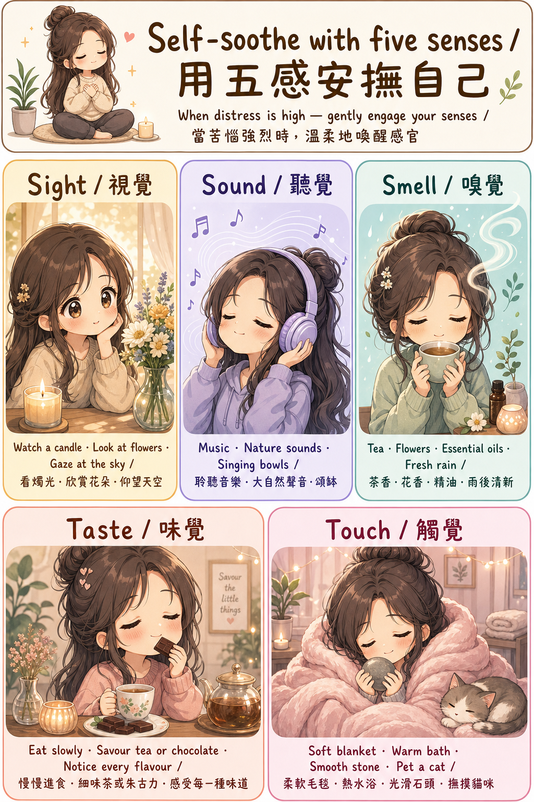

五感安撫
用五感溫柔地照顧自己
當情緒強烈或感覺脫離當下時，專注於身邊真實的感官體驗，能幫助我們從「腦海的漩渦」回到「當下的身體」。這是一種溫柔而有效的自我安慰方式。
什麼時候使用？
當你感到焦慮、悲傷、孤單，或情緒低落時，五感安撫能幫助你感受當下的安全和舒適。
你不需要全部都做——只選一兩個讓你感覺最舒服的就好。沒有「正確答案」，只有「對你有用的方法」。

👆 點擊圖片可放大查看
🎯 現在可以試試看

視覺 Sight
把目光帶到美好的事物上，能幫助大腦從焦慮的思緒中「切換頻道」，感受當下的平靜。
- 看一根蠟燭輕輕搖曳的火焰
- 仰望窗外的天空和雲朵
- 欣賞一束鮮花或植物的顏色和形狀
- 翻看一張珍愛的照片，讓溫暖的回憶湧現
- 留意身邊令你感覺美好的顏色或光線

聽覺 Sound
聲音能繞過思考，直接影響神經系統。舒緩的聲音能在幾分鐘內降低心跳和壓力荷爾蒙。
- 戴上耳機，播放令你平靜或快樂的音樂
- 聆聽大自然的聲音——鳥鳴、流水、風聲
- 敲響頌缽（Singing Bowl），專注聆聽聲音慢慢消散
- 在雨聲中靜靜坐著，感受那份寧靜
- 留意周圍平靜的背景聲音，讓心安定下來

嗅覺 Smell
嗅覺是唯一直接連接大腦情緒中心（邊緣系統）的感官，令氣味能快速喚起平靜和安全感。
- 泡一杯茶，雙手捧著，深深吸入熱氣和香氣
- 走近一朵花，輕輕聞它自然的氣味
- 在手腕滴幾滴精油，緩緩地呼吸
- 打開窗戶，感受雨後清新的空氣
- 聞一聞你喜歡的護手霜或香皂的氣味

味覺 Taste
專注品味食物，能把注意力帶回當下。酸或苦的強烈味道尤其能快速「中斷」情緒漩渦。
- 細細品嚐一小口朱古力，感受它慢慢融化的過程
- 咬一口檸檬或酸糖，讓那股酸勁把你帶回當下
- 慢慢進食，專注感受每一口的味道、質感和溫度
- 細啜一杯花草茶，讓香氣和溫暖慢慢滲透
- 留意食物帶給你的感覺：甜、酸、苦、暖、涼

觸覺 Touch
溫柔的觸碰能刺激催產素（Oxytocin）分泌，降低皮質醇，讓身體感到被安撫和安全。
- 裹上柔軟的毛毯，感受它的重量和溫暖包圍你
- 把雙手浸入溫水，感受溫暖慢慢散開
- 輕握一塊光滑的石頭，用拇指輕輕摩挲它的質感
- 輕撫貓咪或毛絨玩具，感受那份柔軟和連結
- 雙手交疊放在胸口，感受心跳，輕輕對自己說：沒事的
💛
小提示：每次只需 5–10 分鐘。試著真正專注在那個感覺上——它的質感、溫度、氣味……這種專注本身就是一種正念練習，讓你的心回到當下。